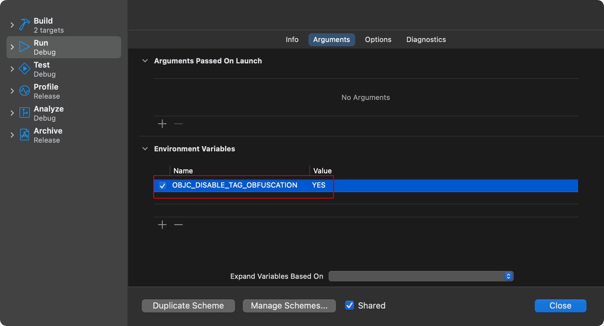
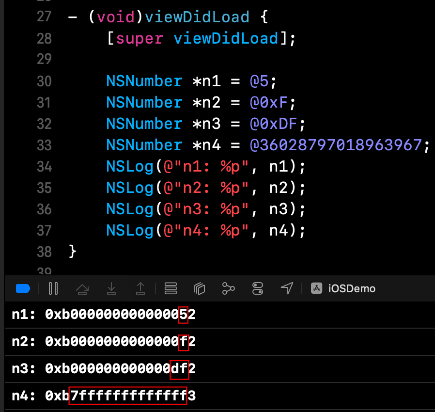
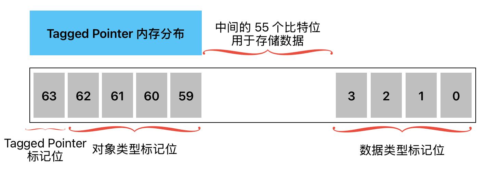

由 布多(budo) 发布于 2025-04-02
Tagged Pointer 的前世今生
在 iOS 开发的早期阶段，所有对象都采用传统的堆内存存储方式。每个对象指针都指向堆内存中的一块区域，这块区域不仅存储着对象的实际数据，还包含了类型信息、引用计数等元数据。这种存储方式虽然通用且灵活，但对于一些简单的数据类型（如 NSNumber 存储的小整数 10、200 等），却显得有些”大材小用”。试想，仅仅为了存储一个小整数，就需要在堆上分配内存、维护引用计数、进行内存回收，这不仅造成了内存空间的浪费，还会因为频繁的内存操作而影响系统性能。
为了解决这个问题，苹果的工程师们提出了 Tagged Pointer 技术。这项技术的核心思想是：对于一些小型数据，将其直接编码到指针中，而不是在堆上分配内存。这种巧妙的设计不仅节省了宝贵的内存空间，还通过减少内存分配和释放操作显著提升了性能。
这种创新的效果是立竿见影的。根据 WWDC2013 苹果官方发布的数据显示，采用 Tagged Pointer 技术后，相关操作获得了显著的性能提升：内存占用直接减少了 50%，数据访问速度提升了 3 倍，而对象的创建和销毁速度更是实现了惊人的 100 倍提升。这些数据充分证明了 Tagged Pointer 技术在内存优化和性能提升方面的巨大价值。
技术原理深度解析
虽然 Tagged Pointer 技术在 iOS 中被广泛应用于 NSNumber、NSDate、NSString 等多个对象类型，但 NSNumber 是最具代表性的例子。因此，本文将以 NSNumber 为例深入讲解其实现原理。其它对象的实现机制与 NSNumber 类似，读者可以举一反三。
值得注意的是，在现代 Xcode 版本中（具体从哪个版本开始不太确定），苹果为了增强数据安全性，对 Tagged Pointer 进行了数据混淆处理。这种混淆机制使得开发者无法通过直接打印指针来判断一个对象是否为 Tagged Pointer，也无法解析其中存储的具体数据。
为了便于调试和观察 Tagged Pointer 的底层实现，我们需要关闭这个数据混淆功能。只需要将环境变量 OBJC_DISABLE_TAG_OBFUSCATION 设置为 YES 即可。

由于 NSNumber 的源码未开源，所以我们通过分析结果来了解 Tagged Pointer 的实现原理。以下是我的调试结果：

通过分析打印结果，我们可以看到 Tagged Pointer 的精妙设计：它将数据直接编码在指针中，而不是在堆内存中分配空间。具体来说：
指针的第 6 位到第 60 位（从左往右数）用于存储实际数据。这意味着一个 NSNumber 对象最多可以存储 55 位的数据，即 0x7FFFFFFFFFFFFF，对应的十进制为 36028797018963967。
指针的其余位则用于存储元数据：
- 第 1 位（最高位）作为 Tag 标记，用于标识这是一个 Tagged Pointer；
- 第 2-5 位用于存储对象类型（如 NSNumber 为 3，NSString 为 2）；
- 最后 4 位用于存储数据类型（如 int 为 2，long 为 3）。
Tagged Pointer 的内存分布图如下所示：

需要注意的是，不同平台和系统版本下，Tagged Pointer 的实现细节可能有所不同。例如，在 iOS 模拟器和真机环境中，Tag 位和数据位的存储位置就存在差异：模拟器中 Tag 位在最低位，而真机中 Tag 位在最高位。这种差异主要是由于不同平台的内存对齐要求和处理器架构特性导致的。因此，在调试过程中如果发现结果与预期不符，可以看看是不是平台或系统版本的问题。
这种设计巧妙地利用了 64 位系统的特性。在现代操作系统中，由于虚拟内存地址空间的限制，64 位指针实际上只使用了最低的 47 位来寻址，这意味着在正常情况下，合法的内存地址最高位一定是 0。Tagged Pointer 正是巧妙利用了这一特点，通过将最高位设为 1 来标识这是一个特殊的指针。Tagged Pointer 还将这些 “空闲” 的位进行了重新规划利用：一部分用于存储类型标记，另一部分用于直接存储数据。这样，对于小型数据（如小整数、短字符串等）就不再需要额外分配堆内存，而是直接将数据编码在指针中。这种设计不仅完美地保证了数据的完整性和访问效率，还通过消除堆内存分配、引用计数管理等开销，实现了内存使用的极致优化。
虽然 NSNumber 的源码未开源，但我通过深入分析 objc_runtime 源码，还是找到了一些关键的入口函数。这些函数揭示了 Tagged Pointer 的底层运作机制，包括数据混淆(其实就是启动的时候生成一个随机数，然后进行异或 ^ 运算)以及 Tag 和 Data 的存储位置等核心实现细节。以下是几个比较重要的函数，碍于篇幅这里就不展开了，感兴趣的同学可以下载 runtime 自行研究，它们共同构成了 Tagged Pointer 的基础框架：
isTaggedPointer => 判断是否是 Tagged Pointer |
Tagged Pointer 的类型编码
在 Tagged Pointer 中，系统使用特定的位来编码对象类型和数据类型。以下是详细的编码对照表：
对象类型编码
对象类型编码存储在指针的第 2-5 位。
| 值 | 对象类型 |
|---|---|
| 2 | NSString |
| 3 | NSNumber |
| 4 | NSIndexPath |
| 5 | NSManagedObjectID |
| 6 | NSDate |
数据类型编码
数据类型编码存储在指针的最后4位。
| 值 | 数据类型 |
|---|---|
| 0 | char |
| 1 | short |
| 2 | int |
| 3 | long |
| 4 | float |
| 5 | double |
| 6 | long long |
判断 Tagged Pointer 的原理
系统是如何判断一个指针是否是 Tagged Pointer 的呢？其实，在 objc4-906 源码中，我们可以找到 isTaggedPointer 的实现细节。
bool isTaggedPointer() { |
从源码中可以看到，系统通过位运算 & 操作获取指针的最高位，并与 _OBJC_TAG_MASK（1UL<<63，即最高位为1的掩码）进行比较。如果结果等于 _OBJC_TAG_MASK，就表示这个指针是一个 Tagged Pointer(简单的说就是判断指针的第一位是否为1)。这种判断方式简单高效，只需要一次位运算就能完成判断。
注意事项
虽然我们一般不需要关心 Tagged Pointer 的具体实现细节，但在使用过程中还是有一些需要注意的地方：
Tagged Pointer 不是传统意义上的 ObjC 对象，它没有常规对象所具有的
isa指针。因此，不要尝试直接访问或操作其 isa 指针，应该始终通过系统提供的公开接口来操作这些对象。出于安全考虑，在现代 Xcode 版本中，苹果对 Tagged Pointer 实现了数据混淆机制。这意味着即使你通过某种方式获取到了指针的原始值，也无法直接解析出其中存储的数据。正确的做法是使用框架提供的标准方法来访问数据。
Tagged Pointer 的具体实现细节可能会随着系统版本的更新而改变。因此，不要在代码中依赖其当前的实现方式（如位编码规则），这可能会导致你的应用在未来的系统版本中出现兼容性问题。
在进行内存调试或性能分析时，要注意 Tagged Pointer 对象的特殊性。它们不会出现在常规的内存分配统计中，因为它们实际上并不占用堆内存。
关于 Tagged Pointer 有一个面试题，碍于篇幅，这里就不展开了，感兴趣的可以看一下 老生常谈内存管理 中的 “相关题目” 章节。